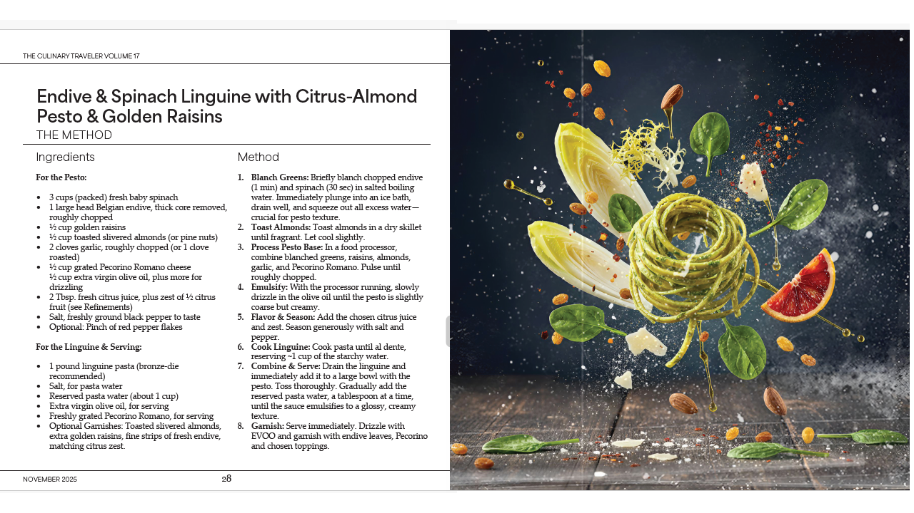
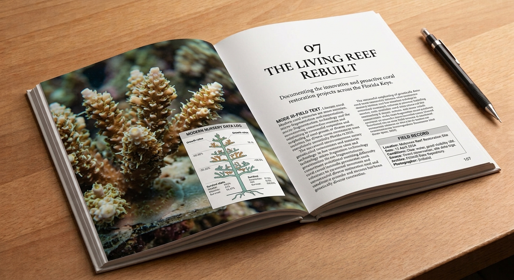

P1Lab provides an external editorial function for organizations with substantial specialized knowledge but no dedicated editorial staff.
We research the subject, interview the people who know it, recover archival and primary sources, develop the material into coherent editorial work, and carry it through research, writing, editing, fact-checking, and publication.
The result can be a technical history, institutional record, field study, substantial feature, educational work, monograph, or complete publication. The organization supplies access and subject expertise. P1Lab takes responsibility for the editorial work.
Independent research. Primary sources. Finished work.
Engagements may operate under non-disclosure and project-specific confidentiality protocols, on either a defined project basis or continuing editorial-retainer basis.
An external editorial function for organizations whose knowledge is substantial but whose people are too occupied, too specialized, or too close to the subject to document it properly.
P1Lab enters the subject directly, develops the necessary subject knowledge, establishes terminology, identifies the relevant evidence, and determines what must be understood before the writing begins.
Research begins wherever the evidence actually resides: archives, technical documents, institutional records, physical collections, field observations, historical materials, expert testimony, or the object itself.
Interviews recover knowledge that may never appear in formal documentation: design intent, historical context, practical limitations, terminology, exceptions, institutional memory, and the reasoning behind specialized decisions.
Claims are checked against primary evidence, authoritative sources, expert testimony, historical records, and competing accounts before they become part of the finished work.
Raw research, interviews, documents, archives, and institutional knowledge are developed into a coherent editorial argument, narrative, structure, and voice.
Specialized subjects are written for intelligent readers without flattening the distinctions that make the subject worth understanding in the first place.
Organizational knowledge that exists primarily in people, correspondence, archives, objects, and accumulated practice can be recovered and converted into a durable institutional record.
The work may require a feature, technical history, field study, educational publication, institutional record, monograph, book-length work, or another form. The editorial architecture follows the subject rather than forcing every project into the same format.
Research is carried through drafting, substantive editing, line editing, revision, fact-checking, source control, and final preparation rather than handed back to the organization as an unfinished research package.
Finished work can be prepared for print, digital publication, institutional distribution, educational use, archival preservation, or other defined publication requirements.
The organization supplies access and subject expertise. P1Lab takes responsibility for turning that knowledge into finished work.
The Desk is supported by a long record of research, technical investigation, publishing, interviewing, archival work, and completed editorial production.
The P1Lab record includes original technical research, systems analysis, structural reference designs, controlled-environment investigations, signal-processing work, technical specifications, and supporting documentation. This work provides the subject-matter depth necessary to research and write about technically demanding subjects without reducing them to generic summaries. P1-Lab technical archive
Complex systems are approached structurally: components, relationships, constraints, behavior, dependencies, failure modes, and functional possibilities are mapped before conclusions are drawn.
Specialized systems are interpreted without erasing the distinctions between mechanism, material behavior, historical development, terminology, and practical use.
Research experience established in special-collections environments involving rare books, historical materials, collection assessment, source evaluation, and the organization of significant physical and intellectual objects.
Collections and archival records are treated as structured evidence environments in which provenance, condition, classification, context, and intellectual significance are considered together.
Research records distinguish primary evidence, expert interpretation, historical context, technical claims, competing accounts, and editorial inference.
Places, landscapes, infrastructure, architecture, cultural sites, and material conditions can be investigated directly through field observation, documentation, historical research, and comparative evidence.
A multidisciplinary publishing record spanning technical systems, philosophy, theology, cultural history, psychogeography, natural history, culinary engineering, applied research, and related subjects. The record demonstrates the ability to enter divergent subject domains, develop substantial subject knowledge, and carry complex research through to finished books.
A complete independently produced editorial publication combining original research, writing, recipes, visual development, art direction, editorial structure, and production. The project demonstrates the ability to develop a publication as a unified intellectual and visual object rather than as text alone. View the complete publication

Independent Magazine Production Interior spread from an independently produced publication combining original research, writing, visual development, art direction, editorial structure, and production.
Research is carried through into sustained prose across historical, ecological, cultural, literary, technical, material, and applied subjects.
Editorial products can be conceived, researched, written, edited, structured, visually directed, and brought through to finished publication.
Extensive experience conducting primary interviews and original media with authors, artists, musicians, producers, engineers, designers, and other domain specialists.
Interviews are used to recover knowledge that is difficult to document formally: terminology, exceptions, design intent, practical experience, historical context, and the reasoning behind specialized decisions.
Materials, ingredients, objects, and physical processes are examined through functional properties, interactions, processing behavior, structural response, and practical constraints.
Physical objects and processes can be examined as integrated systems involving materials, structure, environment, processing, performance, and human use.
Where appropriate, investigation may move beyond description into formulation, system architecture, process development, prototype evaluation, and repeatable methods. The purpose is to establish subject knowledge that can subsequently be documented and communicated accurately.
The Desk's practical investigations provide firsthand understanding of materials, processes, tools, systems, and constraints that cannot always be recovered from published sources alone.
Development of a comprehensive technical reference documenting the NS Design Electric Cello. The investigation examines instrument architecture, mechanical behavior, transduction, signal systems, and related technical relationships as a structured research and editorial record.
Art Direction for NS Design Electric Cello Series Drawing inspiration from minimal abstract expressionism, this art direction replaces traditional instructional graphics with rich color fields and geometric gestures that visually map each volume's distinct balance of physical technique and signal processing. Designed specifically to resonate with cellists, sound designers, audio engineers, and institutional librarians, the elevated aesthetic positions the set as both an authoritative reference work and a fine-art object. By pairing structural typography with warm, inviting materiality, the collection bridges the gap between high-level technical rigor and human creative expression.
An independent field-research and publishing program examining Florida through landscape, infrastructure, architecture, environmental history, cultural geography, and material evidence. The work combines direct observation with archival and historical research.

Print Production & Material Direction for Florida Field Record Drawing from the physical traditions of field journals, archival monographs, and documentary books, this production direction treats paper, typography, image reproduction, and binding as integral parts of the editorial record. Designed for close reading as well as institutional and private collection, each volume balances documentary clarity with tactile materiality, using restrained typography and carefully controlled image reproduction to preserve the character of field photography, maps, notes, and archival material. The result is a book designed not merely to contain a record of Florida, but to function as a durable physical record in its own right.
P1Lab provides the editorial capacity an organization may need for a single important project or as an ongoing external function.
A defined subject, publication, institutional history, technical record, field study, feature, educational work, or monograph carried from initial research through finished editorial work.
Ongoing research, interviewing, writing, editing, fact-checking, and publication support for organizations with continuing subject-matter and documentation needs.
Research may be conducted entirely under NDA or project-defined confidentiality protocols. Internal records, technical data, source material, contradictions, and findings remain outside the public record unless expressly authorized.
Organizations do not need to establish a permanent editorial department to produce serious work from their accumulated knowledge. P1Lab can function as the external research and editorial desk responsible for the assignment.
You know the subject. P1Lab does the work of finding out, documenting it, and making the result usable.